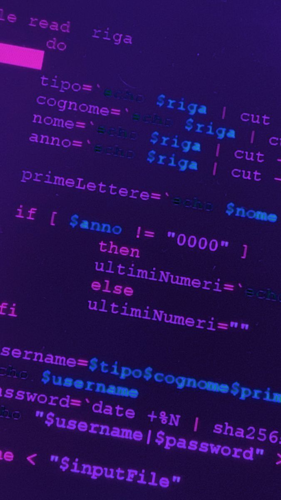
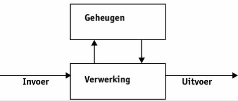

Algemene informatie
De reden dat deze website bestaat is dus door een opdracht voor informatica, maar wat is dat eigenlijk?
Informatica

Informatica is een vakgebied binnen de wetenschap dat zich bezighoudt met de theorie wat betreft computers en hun werking en ook met alle onderdelen van computersystemen en netwerken. Je houdt je voornamelijk bezig met het programmeren en coderen van onder andere websites en apps. Daarnaast leer je ook hoe je bijvoorbeeld gegevens kan beheren en computerprogramma’s kan schrijven. Eigenlijk is het hele vak rondom informatica de reden dat we op sociale media kunnen zitten en ook echt dingen zien die wij leuk vinden. Dat is met een ander woord het ‘algoritme’, maar wordt voor meerdere dingen dan alleen op sociale media gebruikt. Het wordt voornamelijk gebruikt om (technische) problemen op te lossen of, zoals al benoemd, voor aanbevelingen op sociale media of in zoekmachines om relevante zoekresultaten te vinden en nog veel meer. In het kort, draait informatica om het verwerken van gegevens en hieronder wordt uitgelegd welke componenten en welke rol zij daarbij spelen.
Invoer
Als eerst moet een computer natuurlijk informatie ontvangen voordat ze überhaupt hun werk kunnen doen. Hiervoor maak je gebruik van verschillende componenten (oftewel onderdelen) van je computer. Denk hierbij aan je muis, toetsenbord, schermen en microfoons. Door een enkele klik op je muis of een toets op je toetsenbord kan de computer informatie ontvangen en verwerken. Deze invoerapparaten spelen de belangrijkste rol in het uitwisselen van informatie tussen de gebruiker en de computer, omdat ze het mogelijk maken om ‘opdrachten’ te geven en gegevens in te voeren. Gegevens verzamelen uit de omgeving wordt ook door andere vormen van invoer gedaan, namelijk touchscreens, camera’s en sensoren. De informatie die zij opvangen is veel breder, omdat ze ook visuele beelden en audio’s opnemen.
Verwerking & uitvoer
Als de informatie is ingevoerd en ontvangen, dan verwerkt de computer die, en daarbij speelt de software een rol. Die legt namelijk aan de programma’s en browser, wat ze met de ingevoerde gegevens moeten doen. Soms zullen ze veilig moeten worden bewaard en dat gebeurt op harde schijven of een (I) cloudopslag, waar gegevens veilig zijn. Gebruikers kunnen hier ook hun gegevens op beheren en ophalen. Als alles uiteindelijk is verwerkt, dan worden die via uitvoer aan de gebruiker getoond. Dat kan worden gedaan door uitvoerapparaten zoals printers, luidsprekers, koptelefoons of schermen. Zo kunnen we dus communiceren met technologie.
